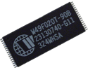
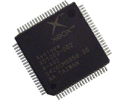

XBOX VERSIONS
& RELATIVE INFORMATION
SYSINFO
LOOKING INSIDE
V1.0 - 1.1 MOTHERBOARD - TOP VIEW
V1.0 USB DAUGHTERBOARD
The reason the 1.0 version was the
only one to use this board was
because of a problem within the MCPX in the first version boards. Later
with the release of the 1.1 board the problem was fixed and allowed the
controller ports to plug directly into the motherboard.
V1.2 MOTHERBOARD - TOP VIEW
V1.6 MOTHERBOARD - TOP VIEW
There are NINE versions of the Xbox on the market today:
XBOX v1.0 - XBOX v1.1 - XBOX
v1.2 - XBOX v1.3 - XBOX v1.4 - XBOX v1.5 - XBOX v1.6 - XBOX
v1.6b, and the latest is V1.7 or not?.
V1.7? should be the last version of the Xbox, as NVIDIA has stopped
production of the Graphic CPU (GPU).
The Xbox has been in short supply for about eight months prior to
Xbox360s' release, but has not been pulled from retailers. M$
Only stated that we
have “reached our targets and want to get ready for the next console.”
Let me be perfectly clear: We are NOT pulling the Xbox from stores.
Xbox consoles being in short supply since they are popular and stopping
production are two VERY different issues.
This information is not 100% accurate, or 100%
viable.
It is hard to know what
version you have AFTER V1.2 because of how Microsoft used refurbished
units in the stream, with new labels. It is hard to tell by the
MFG
date or Serial#, exactly, but they do determine what it SHOULD be.
If every unit you bought was BRAND NEW, that would
eliminate 50% of the doubt.
The only real way is to inspect it and follow the MOD CHIP
instructions, and know where the D0 points are for different version
mainboards. They will have most the information you need on
what Version you have for the install.
Version detection based on serial#/Date:
On the
bottom of the Xbox, you can see the manufacturing date and the serial
number. The manufacturing date is in the following format:
2001-11-03 - i.e. YYYY-MM-DD, (Year-Month-Day) which is the date
according to ISO 8601.
The serial number looks like this: 6144526 14302 - i.e. LNNNNNN YWWFF
FF is the code of the factory (02: Mexico, 03: Hungary, 05: China. 06:
Taiwan), L the number of the factory, Y the last digit of the
production year, WW the number of the week of the production year,
NNNNNN the number of the Xbox within this week.
OK, now Look at the factory code, i.e. the last two digits of the
serial number.
If the factory code is "03" (Hungary), you are done: You can be sure
that it is a 1.0 Xbox. You can even be sure that it contains a Thomson
DVD drive, the worst.
If the factory code is "02" (Mexico), it is either a late model 1.0 or
a 1.1
Xbox.
You then have to look at the manufacturing date: If it is
November 2002
or later, you have a 1.1 Xbox, else it's a 1.0.
If the factory code is "05" (China), you have at least
a 1.1 Xbox.
If the factory code is "06" (Taiwan), you have at least a 1.3 Xbox.
If the manufacturing date is 15 July 2003 or later: probably v1.4, but
it can be a v1.0/v1.1/v1.2/v1.3 f it is a MS factory refurbished unit.
If the manufacturing date is 01 August 2003 or later: probably v1.5 or
v1.4, but it can be a v1.0/v1.1/v1.2/v1.3/V1.3 f it is a MS
factory refurbished unit.
If the manufacturing date is 19 March 2004 or later: probably v1.6
If the manufacturing date is 13 September 2004 or later: probably v1.6b
There's no perfect method to see the difference between v1.2 and v1.3
mainboard.
If your unit has a Samsung DVD drive, you're V1.2 or V1.3
If your Xbox has a Philips - V1.4 to v1.5
MORE SERIAL CHECKS:
Serial Number: XXXXXXX 20XXX = v1.0
Serial Number: XXXXXXX 21XXX = v1.0
Serial Number: XXXXXXX 23XXX = v1.0 or v1.1
Serial Number: XXXXXXX 24XXX = v1.1
Serial Number: XXXXXXX 25XXX = v1.1
Serial Number: XXXXXXX 30XXX = v1.2
Serial Number: XXXXXXX 31XXX = v1.3
Serial Number: XXXXXXX 32XXX = v1.3
Serial Number: XXXXXXX 33XXX = v1.4 or v1.5
SYSTEM INFO:
Goto the "settings" option in the XBOX menu and select "Sytem Info".
You will see lots of legal text, just let it all scroll by. At the end
of the text you will see something like:
K: 1.00.xxxx.01
D: 1.00.yyyy.01
If you don't see this you still have one of the first xbox versions
(3944 - USA only) , so it's a v1.0
If the xxxx = 4034 or 4036 or 4627 you probably have a v1.0
If the xxxx = 4817 or 4972 you probably have a v1.1
If the xxxx = 5101 you probably have a v1.2 or v1.3 or v1.4 or v1.5
If you have a "Special Edition" HALO Xbox (translucent green), it is
said
you have version 1.2, which has been made in weeks 8 and 9 of 2003 on
lines 2, 5 and 6. Now, I have found this to be
untrue, as I have a HALO Edtion Xbox, and it has to be at least a V1.4,
it has a Philips DVD drive (which failed in 6 months), and it was a
newer one with the HUMP on the bottom of the drive
(for the laser assy. cable).
The Phillips DVD drives were not put into the V1.2 Xbox.
Truth be told, only Microsoft knows what version your board is.
- All ORIGINAL XBOX DVD
drives work
in all consoles regardless of version.
- Only 1.0 versions have or
need USB
daughterboards.
- 1.0-1.1 power supplies are
compatible
with 1.0-1.1 motherboards (Older AT Style Header).
- 1.2-1.5 power supplies are
compatible
with 1.2-1.5 motherboards (ATX Type Header).
- 1.6 power supplies are
only compatible
with 1.6 motherboards
LOOKING INSIDE:
Open your xbox and remove the HDD & DVD-ROM. If
there's a fan on the gpu heatsink (next to cpu) you have a v1.0, if
there's no fan you have a v1.1 and later.
If the LPC points are filled holes it can be a v1.0 OR v1.1, if they are empty it's
a v1.1. Most all the other versions from V1.3 have the open holes
on the
LPC bus.
TSOPs

1.0 TSOP (M29F080A-90N6)
1.0 and early version 1.1 motherboards with 40-Pin TSOPs.
TSOP Stores the System Bios - And is Flashable

1.2 TSOP (W49F020T-90B)
Late 1.1
and 1.2-1.4 motherboards with 32-Pin TSOPs.
TSOP Stores the system Bios - And is flashable

For version 1.6 boards the TSOP was replaced with the Xyclops chip. The
Xyclops stores the system bios. Not Flashable.
V1.0 or V1.1 LPC Bus
An atleast V1.2 Xbox has a header (berg sticks) installed in all but
four pins
of the LPC bus.
The V1.6 LPC has one pin/hole missing. It is not filled, it isn't
there.
<--- Solder pad removed from board on left side.
This is a picture of the V1.7 LPC bus
There's
no visual
method to distinguish a v1.5 from a v1.4, but, Xbox v1.5 has power
(pin9) and ground (pin2) disconnected from LPC bus. You would
have to test for those with a multi-meter. My Halo Edition has
the 3.3V and Ground, so it should be a V1.4.
The only difference from V1.6s to V1.7 is that 3 of the holes for no
solder mods are filled in with resin. These holes are by the
Cyclops chip.
The indicators show you where the V1.7 holes are filled
This chip
also replaces the TSOP for V1.6+ Xbox
This chip stores the system BIOS since there is no TSOP
The video output chip (NOT the gpu), located near the video output
connector is made by 'Focus' on v1.4/v1.5 boxes, and my Halo Edition
has the Focus chip.
'Conexant' on v1.0/v1.1/v1.2/v1.3. The brand of the chip is written on
the chip.
<---
V1.6 Xbox has the Xcalibur Chip.
|
Notice also, the Excaliber is has 50-pins, as indicated, and the others
have 40 pins. What is the Difference between them? That is
not known.
The v1.6b, and V1.7 xbox motherboards have a chip labeled 'Xyclops'
above the LPC
bus and thre is no TSOP flash available for an onboard bios
flash.
This is also back to a 40-pin per side chip.
All RAM is Samsung to, and including V1.6
The v1.6b xbox motherboard have RAM chips labeled Hynix.
Other information:
Xbox version 1.6 of the Xbox will not work with the MechInstaller hack,
and can not be TSOP flashed because there is no flashable chip on the
box. A
hack ("UXE", which supercedes the old "UDE") has been developed and
released at xbox-scene (http://www.xbox-scene.com)
that works with the Version 1.6 Xbox, and all Xbox versions, but
the installation is harder and riskier than MechInstaller, and its
legality is questionable.
Xbox V1.6's Dashboard can not be downgraded.
LFRAME: used
to signal the start and end of a data transfer on the LPC bus. In
the v1.3-1.5 xboxs, M$ removed this signal from the motherboard to
circumvent "cheapmod" modchips, so they no longer work. So, so
modchip makers then generated this missing signal with some added
electronics on the modchip.
LFRAME: On v1.6+ xboxs, you short
the LFRAME signal on the motherboard so that the bios on the
motherboard doesn't know that it is being sent data (so it can't see
the start signal) and so it doesn't do anything. The newer modchips now
generate the missing signal themselves, so they see the data correctly
and can load up without any problem.
Xbox hardware (v1.6), they finally switched from flash memory to real
ROM - and even integrated the ROM with the video encoder. The LPC bus
is not needed for manufacturing any more, as the ROM chips are already
preprogrammed. So now it is impossible to replace or to overwrite the
kernel image, and because of the missing LPC bus, it also seemed
impossible to attach a ROM override (modchip).
But, V1.6+ modchips are still possible. The obvious LPC pins are gone
now, but the bus is still there. If you find the LPC pins on the board,
you can attach a ROM override just as before, they are only a bit
harder to install. This is because the Southbridge still has the LPC
override functionality, since they did not make a new revision of it -
as so often, obviously for monetary reasons.
The Xbox models (Version 1.4 and Version 1.5) have a video driver chip:
FOCUS. VGA modes will not have a real RGB output, but a HDTV
output instead.